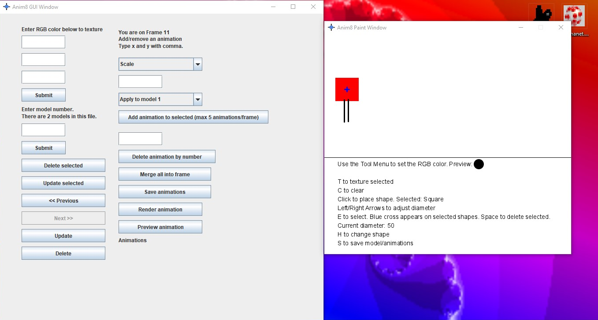
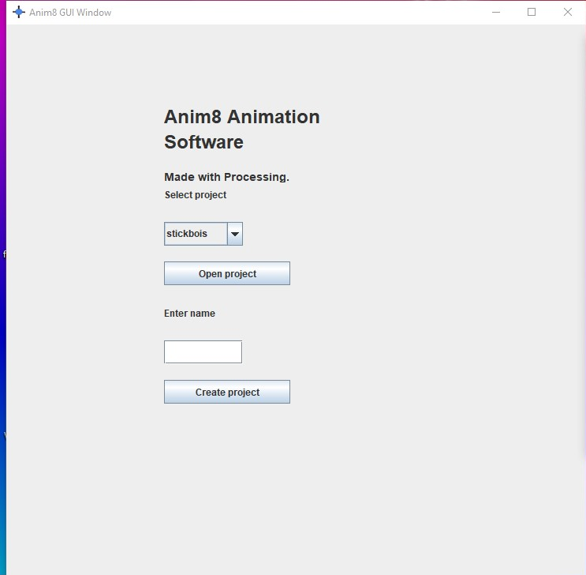
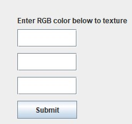
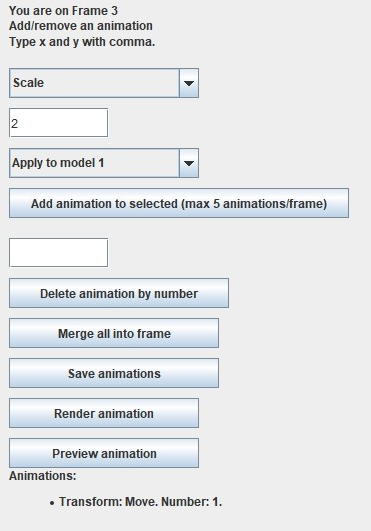
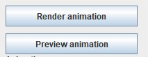
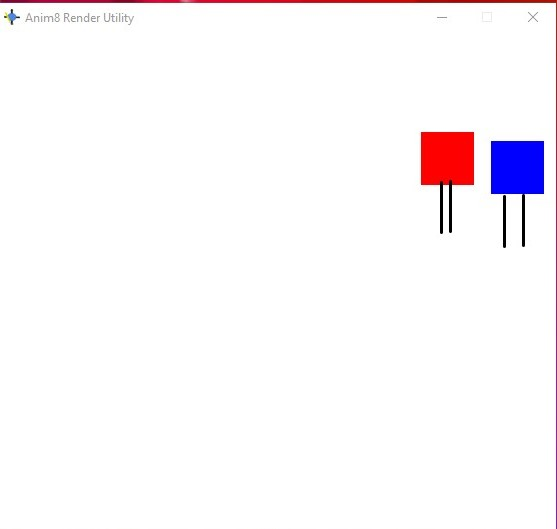

How-tos for Anim8
Topic 1. Workflow
First, you build models. Then, you apply animations. Finally, you render.
1.1. Opening/Making Projects
To make a project, fill out the name field and hit Create. The file is saved in (on Windows) C:/Users/namehere/Documents/anim8/insert name here/insert name here.a8p.
To open a project, select a project from the menu and hit Open.
UI below.
1.2. Making/Opening/Editing Models
Anim8 gives you all of the key shortcuts nicely listed out at the bottom of the window,
as seen below and circled for brevity here.
To color elements of a model, use the RGB color form, seen here.
If you are opening a model from a file, you will see the Model Selection form. Just enter a model number below the limit in the box, circled for brevity here.
- Hit Select to view/edit model.
- Hit Delete Selected to delete selected model.
- Hit Update Selected to set selected's file code to model in view.
1.3. Animating Models
To create an animation, select the model to apply the animation to. Select a transform from the dropdown. Then, enter a number if you're scaling or a coordinate pair like this one: 3,4. Then hit apply. The animation will appear on the list, as seen in the image below.
To delete an animation from the current frame, enter its number in the Delete field and hit the Delete button, seen below.
To combine the transforms into a frame, hit Merge all into frame, then hit Yes on the popup, as seen here.
Also, to save the current frames, hit Save animation.
If you opened a file, you will see these buttons. Here's what they do.
- Use the Previous and Next buttons to scroll through the animations in the file.
- Use the Delete button to delete the selected animation from the file.
- Use the Update button to set the selected frame's code in the file to the frame being worked on.
To render out your animation, hit Render animation. To preview it, hit Preview animation. A window will pop up, showing the frames of the animation. The animation frame images will be in (on Windows) C:/Users/namehere/Documents/anim8/insert name here/frames. Then the frames will be made into a video, which you can find in (on Windows) C:/Users/namehere/Documents/anim8/insert name here/insert name here.mp4.
